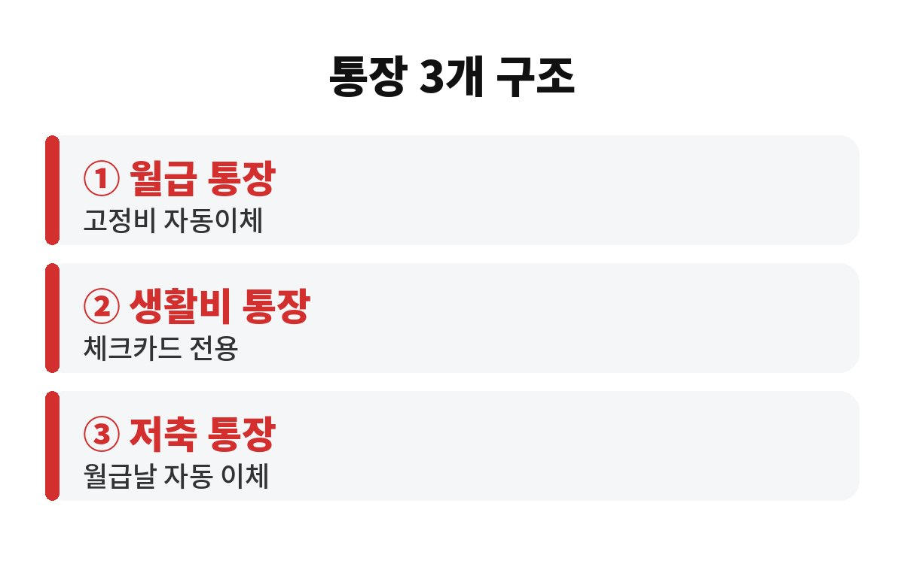
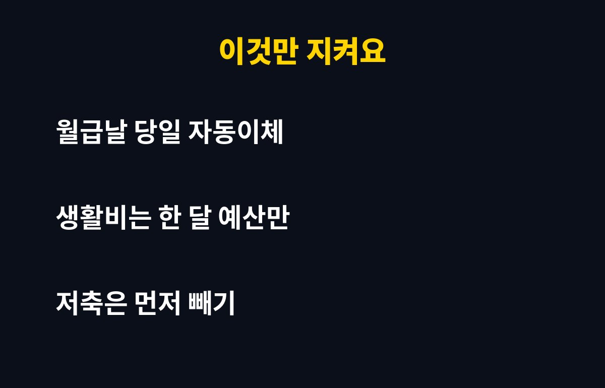

월급 통장 쪼개기는 통장을 월급·생활비·저축 3개로 나눠 돈의 역할을 정해 주는 방법이에요. 월급날만 지나면 통장이 비어 있는 직장인이라면, 이 3개 구조가 정말 새는 돈을 막아 주는지 궁금하지 않으세요?
월급은 들어오는 순간부터 카드값, 월세, 구독료, 보험료가 줄줄이 빠져나가죠. 한 통장에 모든 돈이 섞여 있으면 얼마를 썼는지, 얼마가 남았는지 한눈에 안 보여요. 그래서 "분명 아껴 썼는데 왜 안 남지?" 하는 일이 반복됩니다. 10월 말, 올해도 두 달 남은 지금이 통장 구조를 정리하기 좋은 때예요.
통장을 너무 많이 쪼개면 관리가 번거로워서 오래 못 가요. 반대로 1개만 쓰면 돈의 용도가 섞이죠. 그래서 보통 월급 통장, 생활비 통장, 저축 통장 이렇게 3개를 기본으로 잡아요. 월급 통장은 돈이 들어오고 고정비가 나가는 길목, 생활비 통장은 한 달 쓸 돈만 넣어 두는 곳, 저축 통장은 건드리지 않는 곳이라고 생각하면 쉬워요.
핵심은 '쓰고 남은 돈을 저축'하는 게 아니라 '저축하고 남은 돈을 쓰는' 순서로 바꾸는 거예요. 순서만 바뀌어도 통장 잔액이 체감상 훨씬 다르게 느껴집니다.

월급이 들어오면 먼저 월세, 보험료, 통신비, 구독료 같은 고정비가 월급 통장에서 자동이체로 나가게 설정해요. 그다음 저축 통장으로 정해 둔 금액을 보내고, 마지막으로 남은 금액을 생활비 통장으로 옮깁니다. 이 모든 걸 월급날 당일 자동이체로 걸어 두면 의지력이 필요 없어요.
사람은 눈앞에 돈이 있으면 쓰게 되거든요. 처음부터 눈에 안 보이게 옮겨 두는 게 가장 현실적인 절약법입니다. 자동이체 날짜는 월급일과 같거나 하루 뒤로 잡는 게 안전해요. 월급일이 주말이면 입금이 늦어질 수 있으니 은행 앱에서 이체 실패 알림도 켜 두세요.
지난 3개월 동안 식비, 교통비, 쇼핑, 여가에 쓴 금액의 평균을 내 보세요. 거기서 약간 빠듯하게 한 달 예산을 정하면 됩니다. 예산이 너무 넉넉하면 쪼개기의 의미가 없고, 너무 짜면 한 달을 못 버텨서 저축 통장을 헐게 되죠.
생활비 통장에는 체크카드만 연결해 두면 좋아요. 잔액이 곧 이번 달 남은 예산이라 계산기를 두드릴 필요가 없습니다. 잔액이 바닥나는 날짜가 빠르다면 어디서 새는지 점검하라는 신호예요.
| 통장 | 역할 | 연결할 것 |
| 월급 통장 | 입금과 고정비 | 자동이체 |
| 생활비 통장 | 한 달 예산 | 체크카드 |
| 저축 통장 | 먼저 떼어 두는 돈 | 월급날 자동이체 |

첫째, 신용카드를 따로 쓰면서 생활비 통장 예산을 무시하는 경우예요. 카드값은 다음 달에 청구되니 쪼개기 효과가 사라져요. 둘째, 저축 통장에서 '잠깐만' 빼 쓰는 습관이에요. 한 번 빼면 계속 뺍니다. 저축 통장은 가능하면 다른 은행에 두어 앱에서 바로 안 보이게 하는 것도 방법이에요.
셋째, 처음부터 완벽하게 하려는 마음이에요. 한 달만 해 보고 안 맞으면 금액을 조정하면 돼요. 통장 구조는 내 생활에 맞춰 계속 고쳐 가는 거라서, 석 달 정도는 시행착오라고 생각하고 가볍게 시작해 보세요.
지금 내 월급 통장에서 가장 먼저 빠져나가는 돈은 무엇인가요? 그것부터 적어 보면 쪼개기의 첫걸음이 됩니다. 도움이 되셨다면 구독과 공감으로 응원해 주세요.
※ 본 글은 일반적인 정보 제공이며 투자 권유가 아닙니다.